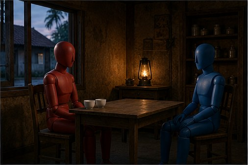
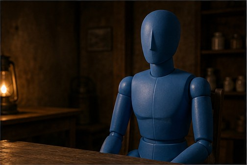
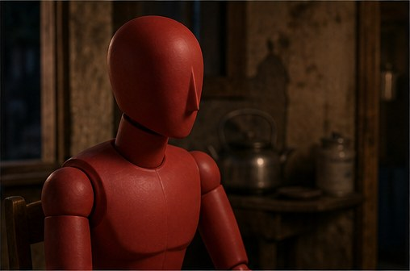
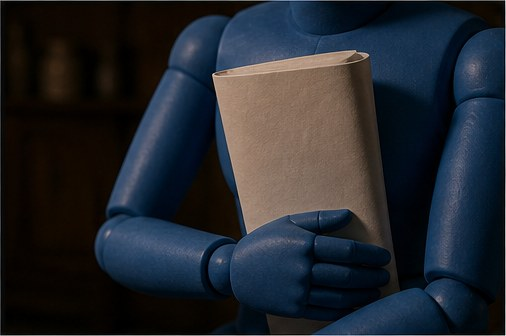
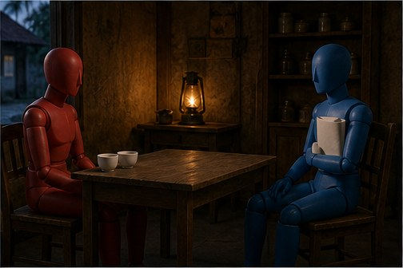
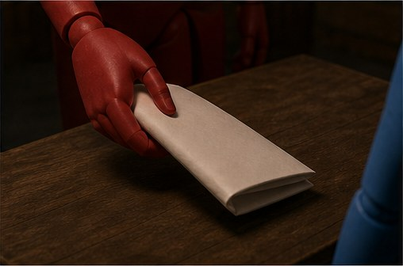
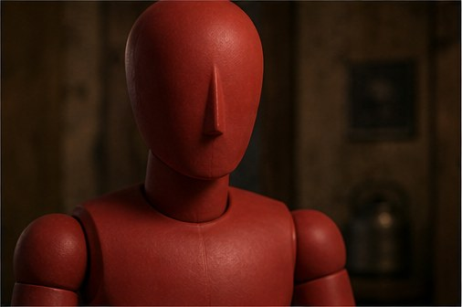
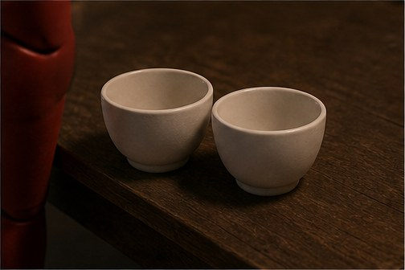
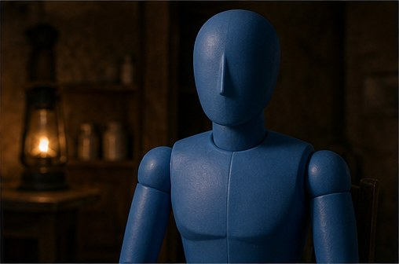

Nimal sits opposite Saman at the wooden table. Saman talks cheerfully while Nimal listens. The glass tea cups remain together at the near corner beside Nimal. The west-wall window and oil lamp establish dusk inside the shop. Saman is seen from behind and to the side; his body and resting left forearm conceal the folded deed.
{'N': 'left', 'S': 'right', 'cups': 'left'}

Saman continues his easy conversation, smiling toward Nimal. His left forearm rests across his upper chest and completely screens the folded deed. His right hand remains in his lap. Nimal is outside the lateral frame and the tea cups are outside the lower-left crop.
{'S': 'centre'}

Nimal watches Saman's face, then his eyes drop toward Saman's upper chest. His jaw tightens as he recognizes the folded paper. Outside the frame, Saman lowers his left forearm into his lap. Hold on Nimal after his gaze settles.
{'N': 'centre'}

The folded deed protrudes against Saman's upper chest, now unobstructed. The visible paper remains folded, exposing no readable wording. Only the paper and the surrounding portion of Saman's torso fill the frame; his face and lowered hands are cropped out.
{'S': 'centre', 'deed': 'centre'}

Nimal reaches across with his right hand and takes the folded deed from Saman's upper chest. Keeping the deed in that hand, he rises completely beside the table and braces his left hand on its near edge. Saman remains seated, his smile vanishing and his hands in his lap. Nimal drives the folded deed downward toward the clear tabletop beside Saman. The frame includes Nimal from his knees upward, Saman opposite him and the untouched tea cups.
{'N': 'left', 'S': 'right', 'cups': 'left', 'deed': 'right'}

Continue Nimal's descending right hand. The folded deed strikes the tabletop under his palm. His fingers release it and his palm lifts just clear, leaving the paper folded where it landed. Only his hand and a small part of his forearm enter the crop; both faces, the tea cups and the oil lamp are outside it.
{'N': 'centre', 'deed': 'centre'}

Nimal fixes his eyes on Saman. His jaw stays clenched and his mouth closed. Hold the compact facial frame as his stillness replaces the force of the slam. Below the crop, he sets his empty right hand on the table beside his already braced left hand.
{'N': 'centre'}

The glass tea cups stand untouched together at the near table corner beside Nimal. Hold their stillness. The tight tabletop crop excludes the brothers, the folded deed and the oil lamp.
{'cups': 'centre'}

Saman looks up toward the standing Nimal and begins his admission. The easy smile is gone. As he speaks about the concealed debt, his shoulders lower and his eyes drop toward the deed below the frame. Finish on his lowered gaze and closing mouth. His hands remain in his lap; Nimal and the tabletop props are outside the crop.
{'S': 'centre'}